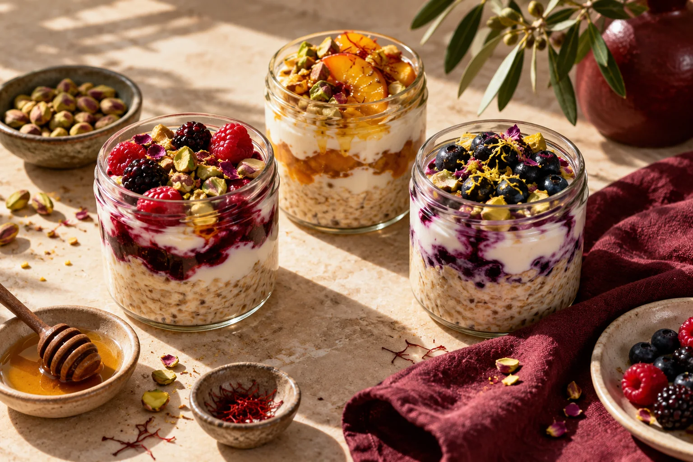

A LITTLE ABOUT US
Ordinary days.
Extraordinary food.
Clean indulgence, made fresh in Ludhiana.

OUR APPROACH
Good food should
feel good, too.
Supernormal Kitchen is about the bright side of everyday eating: fresh breakfast jars, protein bowls, and food made to enjoy. Whether you are taking a pause or bringing people together, there is always room for a little deliciousness.
Based in Ludhiana, we offer delivery, pickup, events and catering.
Explore our offerings ↗